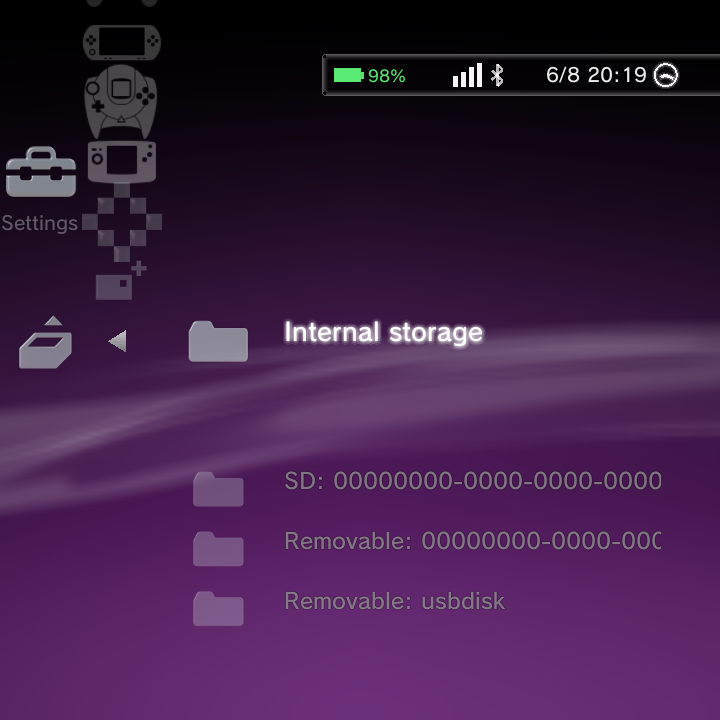

Getting your games into GammaOS Nano is simple: copy your ROM files into the right folders, then run a scan. This page shows you exactly where each system's files go and how to bring them into your library.
The one rule: per-system folders
Nano finds your games by looking in a folder named for each system. Put each game in the folder that matches its console.
The base folder is ROMs at the top of your storage. Inside it, make one folder per system using the short folder name from the table below. For example:
- Put NES games in
/sdcard/ROMs/nes/ - Put SNES games in
/sdcard/ROMs/snes/ - Put Game Boy Advance games in
/sdcard/ROMs/gba/
SD card, internal storage, and USB all work, so use whichever you like. Nano scans them all.
To get the files there in the first place, connect over USB (File Transfer / MTP), use ADB Explorer, or copy over a network share. The FAQ walks through each method.
On a device that boots from its SD card (the A133P handhelds like the TrimUI Brick and MagicX Zero 28), do not pull the card and put it in your PC to copy games onto it. The card holds an encrypted Android partition layout, so your computer will not show your storage. Use MTP, ADB Explorer or a network share instead.
You do not have to unzip anything special or rename your files, as long as the file extension matches what the system expects (see the table).
Systems, folders, and file types
Here are the systems Nano knows out of the box, the folder each one uses, and the file extensions it looks for.
| System | Folder | File types |
|---|---|---|
| NES | nes |
.nes .fds .unf .unif |
| SNES | snes |
.smc .sfc .fig .swc |
| Game Boy | gb |
.gb |
| Game Boy Color | gbc |
.gbc .gb |
| Game Boy Advance | gba |
.gba |
| Nintendo 64 | n64 |
.n64 .v64 .z64 .bin .ndd |
| Nintendo DS | nds |
.nds |
| Genesis / Mega Drive | genesis |
.md .gen .smd .bin |
| Master System | mastersystem |
.sms .sg |
| Game Gear | gamegear |
.gg |
| PlayStation | psx |
.cue .pbp .chd .iso .m3u .img |
| PSP | psp |
.iso .cso .pbp |
| Dreamcast | dreamcast |
.cdi .gdi .chd .cue |
| Neo Geo Pocket | ngpc |
.ngp .ngc .npc |
| PICO-8 | pico8 |
.p8 .png |
Every system here can be changed, and you can add your own. See Game Systems to edit any of these, and Add a Custom System to create a new one.
Scanning your games in
Once your files are in place, tell Nano to look for them:
- Open the Settings category on the home screen.
- Go to Game Settings.
- Choose Rescan Games.
Nano scans every system folder and adds anything new to your library. Your games appear under the Game category, grouped by system.
Here is the same result as a still: each system shows how many games it found.

Run Rescan Games any time you add more files. It is safe to run as often as you like.
Bulk auto-add whole systems at once
If you have a ROMs root laid out with one folder per system (the ES-DE style, where each folder is named for its console), you can import every recognised system in a single pass instead of setting each one up by hand.
Open Settings > Game Settings > Game Systems, choose Auto-add Systems from Folder, and point it at your ROMs root. Nano walks the folders, links each recognised system to a built-in one or creates a new system for it, and skips empty and media-only folders. When it finishes it shows a summary of what it added, including any systems that still need an emulator installed. See Game Systems for the details.

On a very small screen the file picker used to clip its rows so you could not see the bottom of a long list. It now fits the visible screen. If you still prefer a different tool for moving or browsing files, MiXplorer or adb push remain good alternatives.
Multi-disc games (.m3u)
Some games span several discs (common on PlayStation). Instead of showing every disc as a separate entry, Nano groups a multi-disc game into a single library item using an .m3u playlist file that lists the disc files.
This grouping is now on by default. When a folder holds an .m3u playlist, that playlist becomes the one launchable entry and the individual discs it lists are suppressed, so you see the game once and the emulator can switch discs on its own. You can turn the behaviour off under Settings > GammaOS Toolbox > Group Multi-Disc (.m3u) if you would rather see each disc separately. See GammaOS Toolbox for the full list of scan options.
CD games and subfolders
CD-based games (PlayStation, Dreamcast, Sega CD and similar) come as a small .cue or .m3u text file plus one or more large disc data files (usually .bin). Keep them together and let the launcher use the right one:
- The
.cue(single disc) or.m3u(multi-disc) is the entry point. That is the file the launcher and the emulator open. - The disc data files (
.binand friends) must sit beside the.cue/.m3uin the same folder, because the text file refers to them by name.
Because CD games carry these extra files, most people keep each game in its own subfolder, for example ROMs/psx/Final Fantasy VII/ holding the .cue, the .m3u and the .bin files together. To scan games kept this way, turn on Settings > GammaOS Toolbox > Scan ROM Subfolders (off by default). With it on, Nano looks inside subfolders up to six levels deep; with it off, only files directly in the system folder are scanned. One level is scanned by default.
Do not flatten a per-game subfolder by dumping every disc's .bin and .m3u into the system folder together. That makes the launcher scan each disc .bin and each stray .m3u as its own entry, so one game shows up as several duplicate items. Keeping the disc files beside their .cue/.m3u in a subfolder avoids this.
Once games are scanned, remember that a scraped or renamed game shows its proper title rather than the raw filename in your lists and search. See Boxart & Metadata for how the shown name is chosen.
A note on BIOS files
GammaOS Nano does not include any console BIOS or firmware files. Systems like PlayStation, PS2, and Dreamcast need you to supply your own BIOS before games will run, and each emulator has its own place to put it. (Nintendo DS is the exception: the built-in DraStic emulator needs no BIOS.)
For the full picture of which systems need a BIOS and where each one goes, see Emulators.
Next steps
- Turn systems on or off and change how they run in Game Systems.
- Add a console Nano does not list yet in Add a Custom System.
- Download cover art for your library in Boxart & Metadata.